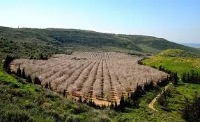

הבן איש חי כתב[1] שיש מצווה ללכת לטייל בארץ ישראל למקום שיש בו פרדסים ונמצאים שם פירות חשובים טובים ומתוקים ומשובחים במאד, אם כוונתם לשם שמיים בשביל חיבוב ארץ ישראל.
כתב הרב מרדכי גרוס שליט''א[2]: רצוי שבדרכים ילמדו מקראות ומאמרי חז"ל הק' ממעלות וסגולות ארץ ישראל השייכות לחלק החומר שבה. וישתדל להבחין בצד הרוחני שבטיול, לראות מעלותיה ותכונותיה של ארץ ישראל, וכן להכיר את גבולותיה של ארץ ישראל ונחלות השבטים. כשרואה נוף מיוחד וכדו' יראה בזה מעשי ה', ויתבונן בנפלאות הבריאה של הקב"ה.
בטיול כדאי להתבונן בנס הנפלא של קיום ההבטחה (דברים ל ה): "וֶהֱבִיאֲךָ ה' אֱ-לֹהֶיךָ אֶל הָאָרֶץ אֲשֶׁר יָרְשׁוּ אֲבֹתֶיךָ וִירִשְׁתָּהּ וְהֵיטִבְךָ וְהִרְבְּךָ מֵאֲבֹתֶיךָ". כיצד? ארץ שהייתה שוממה עד לפני כמאה וחמישים שנה, היום מתקיים בה (ישעיהו נא ג) - "כִּי נִחַם ה' צִיּוֹן נִחַם כָּל חָרְבֹתֶיהָ וַיָּשֶׂם מִדְבָּרָהּ כְּעֵדֶן וְעַרְבָתָהּ כְּגַן ה' שָׂשׂוֹן וְשִׂמְחָה יִמָּצֵא בָהּ". וכאשר רואים את זה, יש לנו תפקיד לתת "תּוֹדָה וְקוֹל זִמְרָה".

טיול רגלי
במסע הרבנים בראשותם של מרן הרב קוק והגרי"ח זוננפלד למושבות השומרון והגליל בחורף תרע"ד הגרי"ח זוננפלד ירד מהעגלה מזמן לזמן כדי ללכת ברגליו על אדמת הארץ משום חיבת א"י[1].
וכך כתב בהנהגות ופסקים להגרי"ח זוננפלד: רבינו הרבה ללכת רגלי על אדמת ארץ ישראל ונימוקו עמו שהליכה זו על אדמת הקודש חביבה עליו.
עוד מסופר על רבינו שהיה יוצא מעיר העתיקה בירושלים דרך שער שכם וחוזר דרך שער יפו כדי לקיים מה שנאמר שם סובו ציון והקיפוה[2]. וכך היה המנהג הקדום בירושלים לסובב את החומה בימי חול המועד כדי לקיים מה שנאמר סובו ציון והקיפוה ספרו מגדליה[3].

אהבתו של האדמו"ר מסדיגורא ר' אברהם יעקב זי"ע בעל ה'אביר יעקב', נינו של ר' ישראל מרוז'ין, לארץ ישראל היתה רבה ועצומה. גדולה היתה שמחתו בראותו את ארץ ישראל ההולכת ונבנית. רבנו היה עומד פעמים רבות ומשקיף על הנוף של ארץ האבות. כאשר היה נוסע בימי הקיץ למנוחה בהרי הכרמל, הקפיד שלא לומר שהוא נוסע לחיפה, אלא שהוא נוסע להר הכרמל, כי שם התהלך אליהו הנביא, וקדושתו חופפת על המקום. פעם אחת בשהותו בכרמל התרגש עד מאוד ואמר לחסידיו: "מה גדולה היא הזכות לצעוד באותו מקום שאליהו הנביא הסתובב בו וקידש שם שמים בהכריזו: ה' הוא האלוקים!"